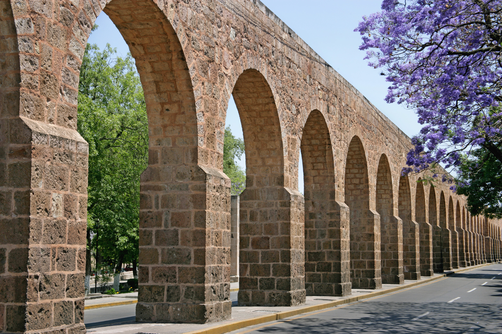
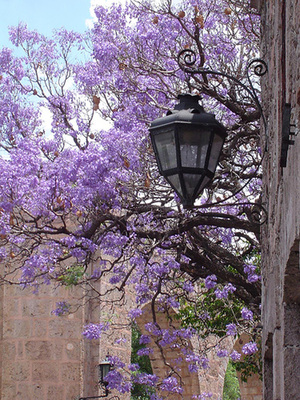
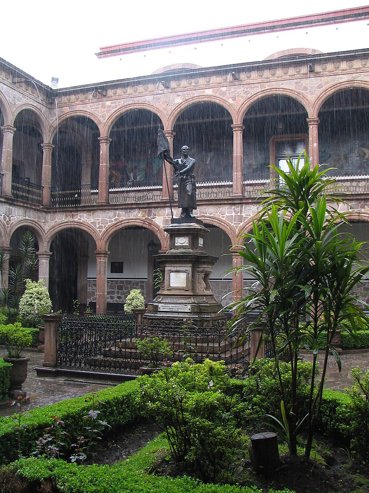
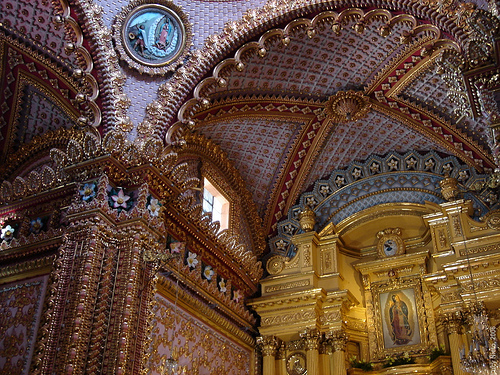
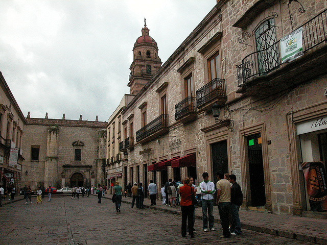
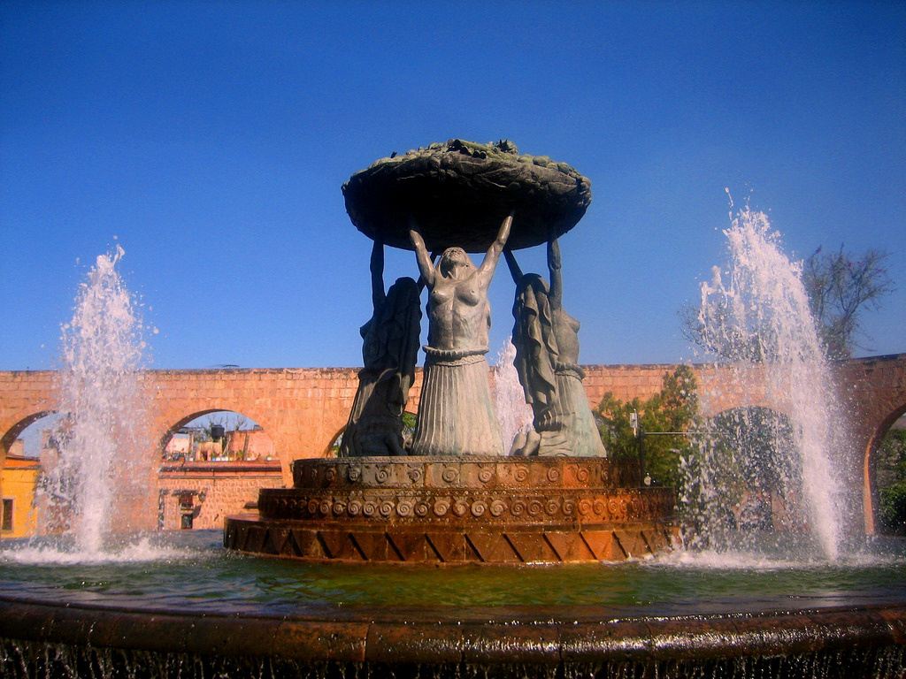
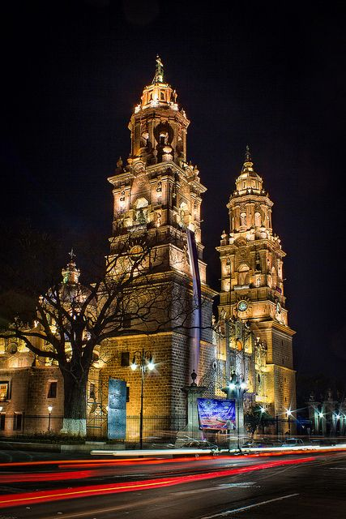
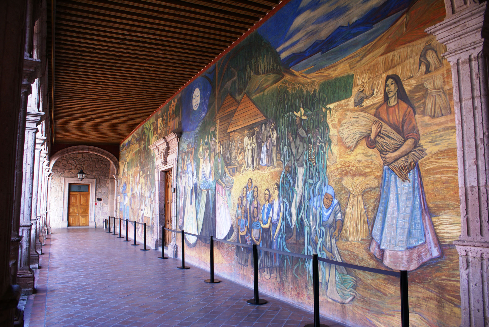

|  |  |  |  |
|  |  |  |  |
The state capital of Michoacán and its most dynamic and beautiful city, Morelia is an increasingly popular destination, and rightly so: the colonial heart of the city is so well preserved that it was declared a Unesco World Heritage site in 1991, and its cathedral is not just gorgeous, it’s inspirational.
Morelia, founded in 1541, was one of the first Spanish cities in Nueva España. The first viceroy, Antonio de Mendoza, named it Valladolid after the Spanish city and he encouraged Spanish nobility to move here with their families. In 1828, after Nueva España had become the Republic of Mexico, the city was renamed Morelia in honor of local hero José María Morelos y Pavón, a key figure in Mexico’s independence.
Elegant 16th- and 17th-century stone buildings, baroque facades and archways line the narrow downtown streets, and are home to museums, hotels, restaurants, chocolaterías (chocolate shops), sidewalk cafes, a popular university and cheap-and-inviting taquerías (taco stalls).
There are free public concerts, frequent art installations, and yet so few foreign tourists. Those who do come often extend their stay and enroll in classes to learn how to cook and speak Spanish. Word may soon leak out, but, for the moment, Morelia is like an Oaxaca waiting to happen.